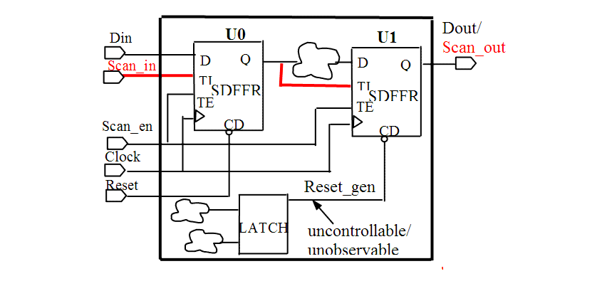
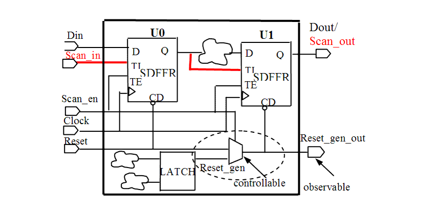

| Description | It is important to control the set/reset signal in order to set the flip-flop to the appropriate state during test (i.e., reset at the beginning then used as a regular flip-flop). Violating this rule results in lower test coverage or an increase in the number of required test vectors. |
| Policy | DESIGN |
| Ruleset | DFT |
| Language | VHDL/Verilog |
| Type | Hardware |
| Severity | Error |
This is an example of invalid Verilog code, followed by a circuit diagram that illustrates the problem:
module ntl_dft31_top(Clock, Reset, Scan_en, Scan_in, Din, Dout); ... wire Reset_gen; // NTL_DFT31 fires -- internally generated reset signal LATCH1 I0(net_01, net_02, Reset_gen); // uncontrollable reset signal generated by a latch // reset_int is uncontrollable and unobservable // Scan DFF -- SDFF SDFF U0(.D(Din), .CP(Clock), .CD(Reset), .TI(Scan_in), .TE(Scan_en), .Q(net_01)); SDFF U1(.D(Din), .CP(Clock), .CD(Reset_gen), .TI(net_02), .TE(Scan_en), .Q(Dout)); endmoduleExample
This is an example of valid Verilog code that shows how to make the internally generated reset observable and controllable, followed by a circuit diagram that illustrates the correct approach:
module ntl_dft31_top(Clock, Reset, Scan_en, Scan_in, Din, Dout, Reset_gen_out); input Reset; //a input port output Reset_gen_out ; // a output port ... wire Reset_gen; // internally generated reset signal Wire Reset_mux; //a muxed Reset, when Scan_en =1, Reset_mux <= Reset LATCH1 I0(net_01, net_02, Reset_gen); // uncontrollable reset signal generated by a latch // reset_gen is uncontrollable and unobservable MUX I0 (.A(Reset_gen), .B(Reset), .S(Scan_en) , .Z(Reset_mux)); // OK -- add mux cell to make reset controllable // Scan DFF -- SDFF SDFF U0(.D(Din), .CP(Clock), .CD(Reset), .TI(Scan_in), .TE(Scan_en), .Q(net_01)); SDFF U1(.D(Din), .CP(Clock), .CD(Reset_mux), .TI(net_02), .TE(Scan_en), .Q(Dout)); BUF I1(.A(Reset_gen), .B(Reset_gen_out)); // OK - make reset observable endmodule